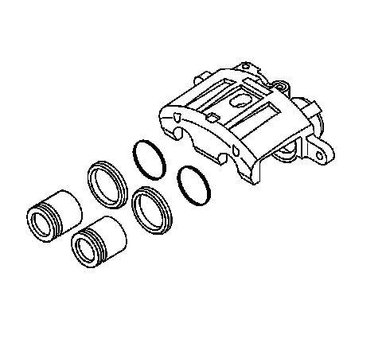
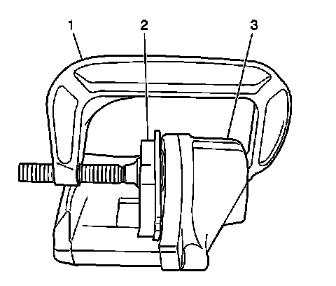

Brake Caliper: Testing and Inspection
Brake Caliper Inspection
Caution: Refer to Brake Dust Caution.

1. Inspect the brake caliper housing for cracks, excess wear, and/or damage. If any of these conditions are present, the brake caliper requires replacement.
2. Inspect the caliper piston dust boot seals for cracks, tears, cuts, deterioration and/or improper seating in the caliper body. If any of these conditions are present, the brake caliper requires overhaul or replacement.
3. Inspect for brake fluid leakage around the caliper piston dust boot seals and on the disc brake pads. If there is any evidence of brake fluid leakage, the brake caliper requires overhaul or replacement.

4. Inspect for smooth and complete travel of the caliper pistons into the caliper bores:
The movement of the caliper pistons into the caliper bores should be smooth and even. If the caliper piston is frozen or difficult to bottom, the caliper requires overhaul or replacement.
Insert a discarded inner brake pad (2) or block of wood in front of the pistons. Using 2 large C-clamps (1) installed over the body of the caliper (3) and against the brake pad or block of wood, slowly bottom the pistons evenly into the bores.